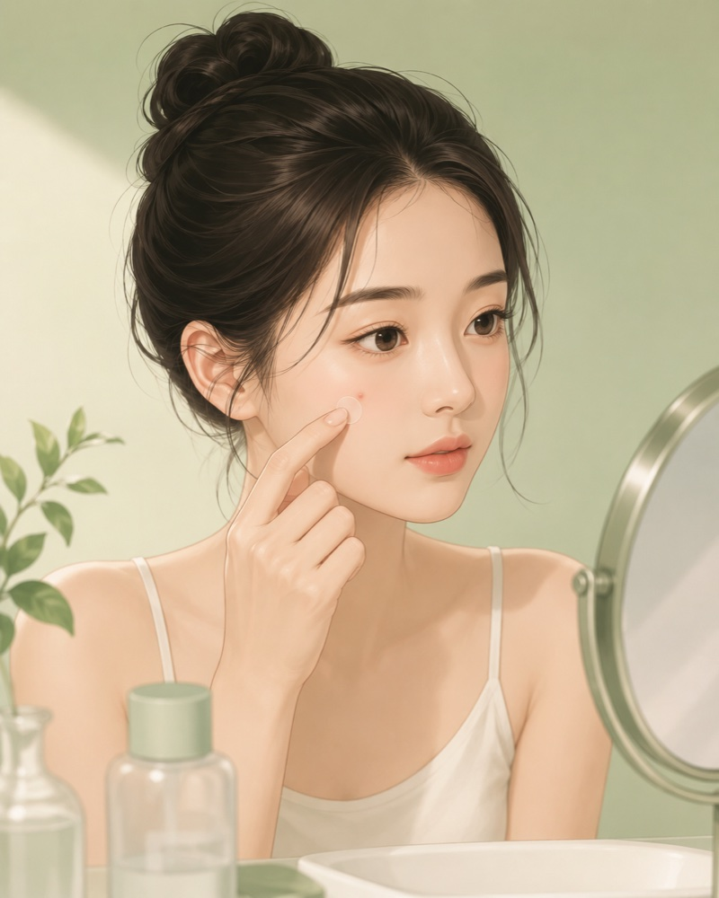
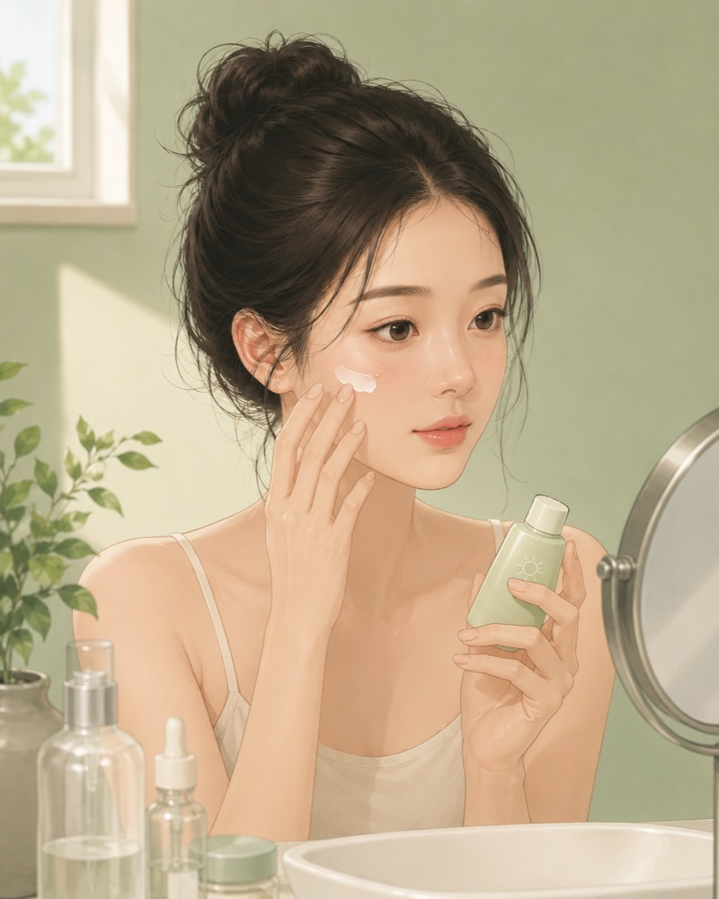
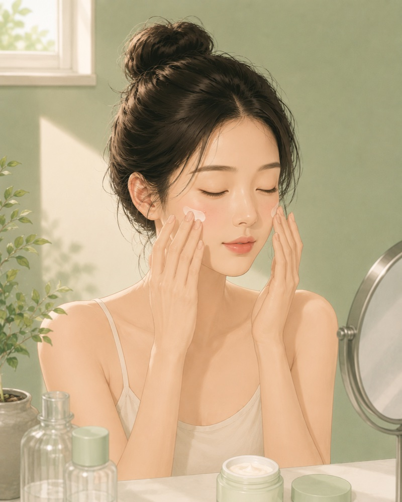
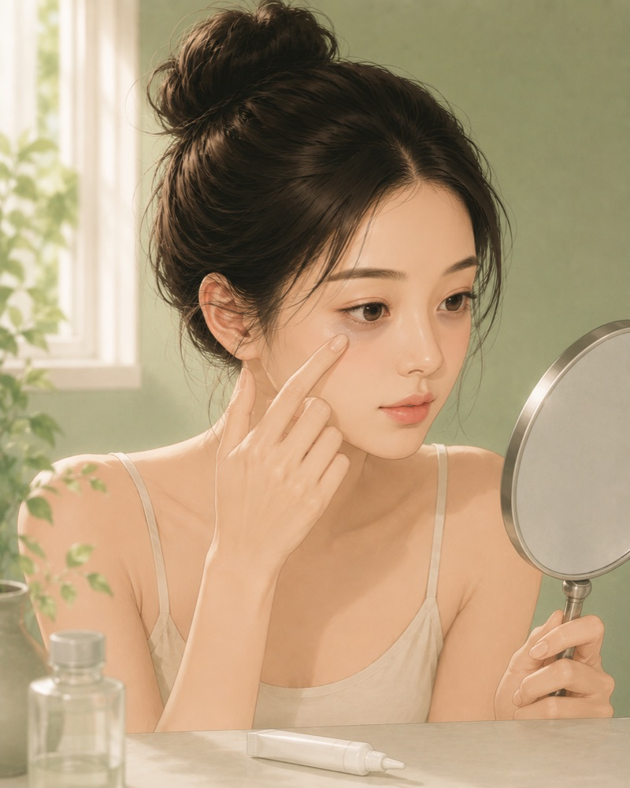
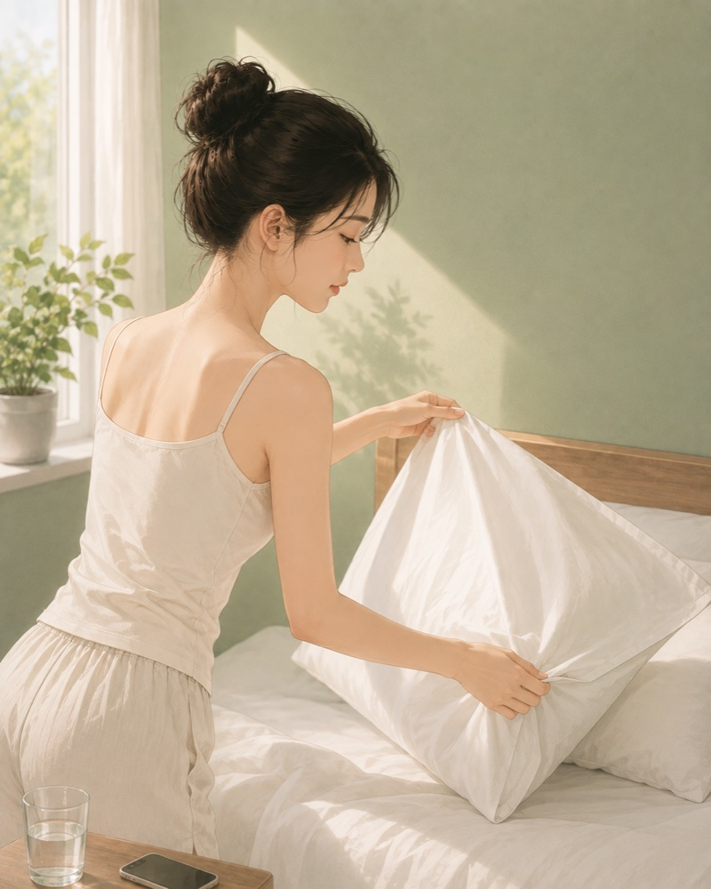

Skin Care Guide피부 트러블 케어 가이드肌トラブルケアガイド皮肤问题护理指南皮膚問題護理指南Guía de cuidado de la piel
Care tips for blemishes, pigment spots and redness, matched to your skin map. A guide, not medical advice.피부 상태 맵에서 확인한 트러블·색소·홍조를 관리하는 방법. 의료 조언이 아닌 참고용 가이드입니다.肌状態マップで確認したトラブル・色素・赤みのケア方法。医療アドバイスではなく参考ガイドです。针对皮肤状态图中的痘痘、色素与泛红的护理方法。仅供参考，非医疗建议。針對皮膚狀態圖中的痘痘、色素與泛紅的護理方法。僅供參考，非醫療建議。Cuidados para granos, manchas y rojez según tu mapa de piel. Una guía, no un consejo médico.
👍
Skin looks calm.피부가 안정적이에요.肌は落ち着いています。皮肤状态稳定。皮膚狀態穩定。Tu piel está tranquila.Keep your basic routine and sunscreen.기본 루틴과 자외선 차단만 유지하세요.基本ケアと日焼け止めを続けましょう。保持基础护理和防晒即可。保持基礎護理和防曬即可。Mantén tu rutina básica y el protector solar.
🌱
A few spots detected.약간의 트러블이 보여요.軽いトラブルがあります。检测到少量痘痘。檢測到少量痘痘。Se detectaron algunos granitos.Gentle cleansing and spot care usually settle these in days.순한 세안과 스팟 케어면 며칠 안에 가라앉는 경우가 많아요.やさしい洗顔とスポットケアで数日で落ち着くことが多いです。温和清洁加局部护理，通常几天就能平复。溫和清潔加局部護理，通常幾天就能平復。Con limpieza suave y cuidado localizado suelen calmarse en días.
🧴
Noticeable breakouts.트러블이 여러 개 보여요.トラブルが目立ちます。痘痘较明显。痘痘較明顯。Brotes visibles.Simplify your routine and check the habits below — avoid picking.루틴을 단순화하고 아래 생활 습관을 점검하세요. 손으로 만지지 않는 게 가장 중요해요.ケアをシンプルにし、下の習慣を見直しましょう。触らないことが最重要です。简化护肤流程并检查下方习惯，切勿用手挤。簡化護膚流程並檢查下方習慣，切勿用手擠。Simplifica tu rutina y revisa los hábitos de abajo; no los toques.
⚠️
Widespread breakouts.트러블이 넓게 분포해요.トラブルが広範囲です。痘痘分布较广。痘痘分佈較廣。Brotes extendidos.If painful, recurring or scarring, a dermatologist visit is the fastest route.아프거나 반복되거나 흉이 남는다면 피부과 상담이 가장 빠른 길이에요.痛み・繰り返し・跡が残る場合は皮膚科受診が最短です。若疼痛、反复或留疤，就诊皮肤科是最快的办法。若疼痛、反覆或留疤，就診皮膚科是最快的辦法。Si duelen, se repiten o dejan marca, el dermatólogo es el camino más rápido.
Blemish (Acne) Care트러블(여드름) 케어肌トラブル（ニキビ）ケア痘痘护理痘痘護理Cuidado de granosBlemish CareBlemish CareBlemish CareBlemish CareBlemish Care
A blemish is a clogged pore turned inflamed. The goal is calming, not attacking: gentle cleansing, light hydration, targeted actives. Consistency over 4-6 weeks beats any overnight fix.트러블은 막힌 모공에 염증이 더해진 상태예요. 핵심은 공격이 아니라 진정입니다: 순한 세안, 가벼운 보습, 필요한 곳에만 유효 성분. 하룻밤 특효약보다 4~6주의 꾸준함이 이깁니다.ニキビは詰まった毛穴に炎症が加わった状態。攻めるより鎮める: やさしい洗顔、軽い保湿、部分的な有効成分。一晩の特効薬より4〜6週間の継続が勝ちます。痘痘是堵塞毛孔加上炎症。关键是安抚而非攻击：温和清洁、清爽保湿、只在需要处用活性成分。4-6周的坚持胜过任何速效偏方。痘痘是堵塞毛孔加上炎症。關鍵是安撫而非攻擊：溫和清潔、清爽保濕、只在需要處用活性成分。4-6週的堅持勝過任何速效偏方。Un grano es un poro obstruido con inflamacion. La clave es calmar, no atacar: limpieza suave, hidratacion ligera y activos localizados. La constancia de 4-6 semanas gana a cualquier remedio expres.

✓ Do this이렇게 하세요おすすめ建议建議Haz esto
Cleanse twice daily with lukewarm water and a mild low-pH cleanser - morning and night, no more.미지근한 물과 순한 약산성 클렌저로 하루 2회만 세안하세요 - 아침·저녁이면 충분해요.ぬるま湯と低刺激の弱酸性洗顔料で1日2回まで - 朝晩で十分です。早晚各一次，用温水和温和的弱酸性洁面即可。早晚各一次，用溫水和溫和的弱酸性潔面即可。Limpia dos veces al dia con agua tibia y un limpiador suave de pH bajo: manana y noche, no mas.
Cover active spots with a hydrocolloid patch - it blocks your hands and speeds healing.올라온 트러블엔 하이드로콜로이드 패치 - 손을 차단하고 회복을 앞당깁니다.出てきたニキビにはハイドロコロイドパッチ - 手から守り回復を早めます。冒出的痘痘贴上水胶体痘痘贴——隔绝手指、加速修复。冒出的痘痘貼上水膠體痘痘貼——隔絕手指、加速修復。Cubre los granos activos con un parche hidrocoloide: bloquea las manos y acelera la curacion.
Moisturize with light non-comedogenic products - skipping it only triggers more oil.보습은 가볍고 모공을 막지 않는(논코메도제닉) 제품으로 - 건너뛰면 피지가 더 늘어요.保湿は軽くてノンコメドジェニックなものを - 抜くと皮脂がむしろ増えます。用清爽不致痘的保湿——跳过保湿反而出油更多。用清爽不致痘的保濕——跳過保濕反而出油更多。Hidrata con productos ligeros no comedogenicos: saltartelo solo dispara mas sebo.
Introduce one active at a time (BHA, benzoyl peroxide or adapalene), every other night at first - and sunscreen every morning.유효 성분(BHA·과산화벤조일·아다팔렌)은 한 번에 하나, 격일 저녁부터 - 아침엔 자외선 차단을 꼭.有効成分（BHA・過酸化ベンゾイル・アダパレン）は一度に1つ、隔日夜から。朝は必ず日焼け止めを。活性成分（BHA/过氧化苯甲酰/阿达帕林）一次只加一种，隔晚开始，早上务必防晒。活性成分（BHA/過氧化苯甲醯/阿達帕林）一次只加一種，隔晚開始，早上務必防曬。Anade un activo a la vez (BHA, peroxido de benzoilo o adapaleno), noches alternas al inicio, y protector solar cada manana.
✕ Avoid피하세요避けたいこと要避免要避免Evita
Squeezing or picking - it pushes inflammation deeper and turns a 5-day spot into a 5-month mark.짜거나 뜯기 - 염증이 깊어지고, 5일이면 갈 트러블이 5개월 가는 자국이 됩니다.潰す・いじる - 炎症が深くなり、5日で消えるものが5か月残る跡に。挤压抠挖——炎症更深，5天能好的痘变成5个月不退的印。擠壓摳挖——炎症更深，5天能好的痘變成5個月不退的印。Apretar o tocar: hunde la inflamacion y convierte un grano de 5 dias en una marca de 5 meses.
Hot water, scrubs and squeaky-clean washing - a stripped barrier breaks out more.뜨거운 물·스크럽·뽀득뽀득 세안 - 장벽이 벗겨지면 트러블이 더 납니다.熱い湯・スクラブ・洗いすぎ - バリアが剥がれると余計に荒れます。热水、磨砂和洗到发涩——屏障受损反而更容易爆痘。熱水、磨砂和洗到發澀——屏障受損反而更容易爆痘。Agua caliente, exfoliantes y limpiar hasta rechinar: una barrera danada brota mas.
Layering several new products at once - if skin reacts you cannot tell which one caused it.새 제품 여러 개를 한꺼번에 - 뒤집어져도 범인을 알 수 없게 됩니다.新しい製品を一度に複数 - 荒れても原因が特定できません。同时上多个新产品——出问题也找不出元凶。同時上多個新產品——出問題也找不出元兇。Apilar varios productos nuevos a la vez: si la piel reacciona no sabras cual fue.
See a dermatologist for painful nodules or cysts, breakouts that scar, or acne unchanged after 2-3 months of consistent care.아픈 결절·낭종성 트러블, 흉터를 남기는 트러블, 2~3개월 관리에도 나아지지 않는 경우는 피부과 진료를 권합니다.痛い結節・嚢腫、跡が残るニキビ、2〜3か月ケアしても改善しない場合は皮膚科へ。疼痛的结节囊肿、会留疤的痘、坚持护理2-3个月仍无改善时，建议就诊皮肤科。疼痛的結節囊腫、會留疤的痘、堅持護理2-3個月仍無改善時，建議就診皮膚科。Consulta al dermatologo si hay nodulos o quistes dolorosos, brotes que dejan cicatriz o acne sin mejora tras 2-3 meses.
Pigment Spots and Dark Marks색소·잡티 케어色素・しみケア色素斑护理色素斑護理Manchas y marcasPigment CarePigment CarePigment CarePigment CarePigment Care
Spots are melanin working overtime - triggered mostly by UV and by the inflammation a blemish leaves behind. Sunscreen stops new deposits; brightening actives slowly clear old ones. Think in months, not days.색소는 과로한 멜라닌입니다 - 주범은 자외선, 그리고 트러블이 남긴 염증이죠. 자외선 차단이 새 침착을 막고, 미백 성분이 기존 침착을 서서히 지웁니다. 며칠이 아니라 몇 달 단위로 보세요.しみは働きすぎたメラニン - 主因は紫外線と、ニキビが残した炎症です。日焼け止めが新しい沈着を防ぎ、美白成分が既存の沈着をゆっくり薄くします。数日ではなく数か月単位で。色斑是超时工作的黑色素——主因是紫外线，以及痘痘留下的炎症。防晒阻止新的沉积，美白成分慢慢淡化旧的。以月为单位看待，而非天。色斑是超時工作的黑色素——主因是紫外線，以及痘痘留下的炎症。防曬阻止新的沉積，美白成分慢慢淡化舊的。以月為單位看待，而非天。Las manchas son melanina trabajando de mas, provocada por el sol y la inflamacion que deja un grano. El protector frena depositos nuevos; los activos aclaran los antiguos. Piensa en meses, no en dias.

✓ Do this이렇게 하세요おすすめ建议建議Haz esto
Broad-spectrum SPF every morning, rain or shine - reapply outdoors. This one habit is 80 percent of pigment care.아침마다 자외선차단제, 흐린 날도 - 야외에선 덧바르세요. 이 습관 하나가 색소 관리의 8할입니다.毎朝、曇りでも日焼け止めを - 外では塗り直し。この習慣が色素ケアの8割です。每天早上涂防晒，阴天也要——户外记得补涂。这一个习惯占色素护理的八成。每天早上塗防曬，陰天也要——戶外記得補塗。這一個習慣佔色素護理的八成。SPF de amplio espectro cada manana, llueva o haga sol, y reaplica fuera. Este habito es el 80 por ciento del cuidado.
Vitamin C serum in the morning under sunscreen - antioxidant plus gradual brightening.아침엔 자외선차단제 아래 비타민C 세럼 - 항산화와 점진적 미백을 동시에.朝は日焼け止めの下にビタミンCセラム - 抗酸化と緩やかな美白を同時に。早上在防晒前用维C精华——抗氧化兼渐进提亮。早上在防曬前用維C精華——抗氧化兼漸進提亮。Serum de vitamina C por la manana bajo el protector: antioxidante y aclarado gradual.
Niacinamide or retinoids at night speed cell turnover - visible change takes 8-12 weeks.저녁엔 나이아신아마이드나 레티노이드로 턴오버 촉진 - 눈에 띄는 변화는 8~12주입니다.夜はナイアシンアミドかレチノイドでターンオーバー促進 - 目に見える変化は8〜12週。晚上用烟酰胺或维A类加速代谢——明显变化需8-12周。晚上用菸醯胺或維A類加速代謝——明顯變化需8-12週。Niacinamida o retinoides por la noche aceleran la renovacion: cambios visibles en 8-12 semanas.
Post-blemish marks fade on their own within months - sunscreen makes it faster.트러블 자국은 수개월 내 자연히 옅어져요 - 자외선 차단이 속도를 앞당깁니다.ニキビ跡は数か月で自然に薄くなります - 日焼け止めで早まります。痘印会在数月内自然变淡——防晒能加快这个过程。痘印會在數月內自然變淡——防曬能加快這個過程。Las marcas post-grano se aclaran solas en meses; el protector acelera el proceso.
✕ Avoid피하세요避けたいこと要避免要避免Evita
Rubbing brightening products in hard - friction itself causes pigmentation.미백 제품을 세게 문질러 바르기 - 마찰 자체가 색소침착의 원인입니다.美白製品を強くこすり込む - 摩擦自体が色素沈着の原因に。用力搓揉美白产品——摩擦本身就会造成色沉。用力搓揉美白產品——摩擦本身就會造成色沉。Frotar los despigmentantes con fuerza: la friccion misma pigmenta.
Lemon juice, toothpaste and other DIY remedies - irritation darkens spots, never lightens them.레몬즙·치약 같은 민간요법 - 자극은 색소를 옅게 만들지 않고 더 진하게 만듭니다.レモン汁・歯磨き粉などの民間療法 - 刺激はしみを濃くするだけです。柠檬汁、牙膏等偏方——刺激只会让斑更深。檸檬汁、牙膏等偏方——刺激只會讓斑更深。Zumo de limon, pasta de dientes y otros remedios caseros: la irritacion oscurece, nunca aclara.
Quitting at week 3 - pigment clears along the skin cycle of 28-plus days.3주 만에 포기하기 - 색소는 약 28일 이상의 피부 주기를 따라 서서히 빠집니다.3週間で諦める - 色素は約28日以上の肌サイクルに沿って抜けます。三周就放弃——色素随约28天以上的皮肤周期缓慢代谢。三週就放棄——色素隨約28天以上的皮膚週期緩慢代謝。Rendirse en la semana 3: el pigmento sigue el ciclo de la piel de 28 dias o mas.
Any dark spot that changes in size, shape or color, bleeds, or looks unlike your other spots deserves a prompt skin check.크기·모양·색이 변하거나, 피가 나거나, 다른 점들과 달라 보이는 반점은 미루지 말고 진료를 받아보세요.大きさ・形・色が変わる、出血する、他と見た目が違う斑点は早めに受診を。大小、形状或颜色变化、出血、或与其他斑点明显不同的深色斑，请尽快就医检查。大小、形狀或顏色變化、出血、或與其他斑點明顯不同的深色斑，請盡快就醫檢查。Cualquier mancha que cambie de tamano, forma o color, sangre o difiera de las demas merece revision medica pronta.
Redness and Sensitivity홍조·민감 진정赤み・敏感ケア泛红与敏感泛紅與敏感Rojez y sensibilidadRedness CareRedness CareRedness CareRedness CareRedness Care
Persistent redness means dilated vessels and a thinned barrier overreacting to triggers. The fix is subtraction, not addition: fewer products, fewer extremes, steady barrier repair.지속되는 홍조는 확장된 혈관과 얇아진 장벽이 자극에 과민 반응하는 상태예요. 해법은 더하기가 아니라 빼기입니다: 제품 수를 줄이고, 극단적 자극을 줄이고, 장벽을 꾸준히 복구하세요.続く赤みは、拡張した血管と薄くなったバリアが刺激に過敏になった状態。解決は足し算ではなく引き算: 製品を減らし、極端な刺激を減らし、バリアを地道に修復。持续泛红意味着血管扩张、屏障变薄、对刺激过度反应。解决靠减法而非加法：减少产品、避免极端刺激、稳步修护屏障。持續泛紅意味著血管擴張、屏障變薄、對刺激過度反應。解決靠減法而非加法：減少產品、避免極端刺激、穩步修護屏障。La rojez persistente son vasos dilatados y una barrera fina que sobrerreacciona. La solucion es restar, no sumar: menos productos, menos extremos y reparacion constante.

✓ Do this이렇게 하세요おすすめ建议建議Haz esto
Strip the routine to three steps: gentle cleanser, ceramide or panthenol moisturizer, mineral sunscreen.루틴을 3단계로: 순한 세안, 세라마이드·판테놀 보습, 무기자차 차단제.ケアは3ステップに: やさしい洗顔、セラミド・パンテノール保湿、ノンケミカル日焼け止め。把流程精简为三步：温和洁面、神经酰胺/泛醇保湿、物理防晒。把流程精簡為三步：溫和潔面、神經醯胺/泛醇保濕、物理防曬。Reduce la rutina a tres pasos: limpiador suave, crema con ceramidas o pantenol y protector mineral.
Pat products on with your palms - pressure without friction.문지르지 말고 손바닥으로 눌러 흡수 - 마찰 없는 압력으로.こすらず手のひらで押し込む - 摩擦のない圧で。用手掌按压吸收，不要来回揉搓。用手掌按壓吸收，不要來回揉搓。Aplica presionando con las palmas: presion sin friccion.
Patch-test anything new behind the ear for 2-3 days before it touches your face.새 제품은 귀 뒤에 2~3일 테스트한 뒤 얼굴에 쓰세요.新製品は耳の後ろで2〜3日テストしてから顔へ。新品先在耳后试用2-3天，再上脸。新品先在耳後試用2-3天，再上臉。Prueba lo nuevo tras la oreja 2-3 dias antes de llevarlo a la cara.
Track your flush triggers - spicy food, alcohol, saunas, sudden cold - and pace them.홍조 트리거(매운 음식·음주·사우나·급격한 추위)를 기록하고 조절하세요.赤みの引き金（辛い物・飲酒・サウナ・急な寒さ）を記録して調整を。记录你的泛红诱因——辛辣、酒精、桑拿、骤冷——并加以控制。記錄你的泛紅誘因——辛辣、酒精、桑拿、驟冷——並加以控制。Anota tus desencadenantes (picante, alcohol, sauna, frio repentino) y dosifica.
✕ Avoid피하세요避けたいこと要避免要避免Evita
Fragrance-heavy or high-alcohol products and physical scrubs on reactive days.예민한 날의 향료·고알코올 제품과 물리적 스크럽.敏感な日の香料・高アルコール製品と物理スクラブ。敏感期使用高香精、高酒精产品和物理磨砂。敏感期使用高香精、高酒精產品和物理磨砂。Productos muy perfumados o con alcohol y exfoliantes fisicos en dias reactivos.
Long hot showers aimed at the face - heat keeps vessels dilated for hours.얼굴로 맞는 뜨거운 샤워 - 열은 혈관을 몇 시간씩 확장시킵니다.顔に当てる熱いシャワー - 熱は血管を数時間広げます。热水直冲面部——高温会让血管扩张数小时。熱水直沖面部——高溫會讓血管擴張數小時。Duchas calientes largas a la cara: el calor dilata los vasos durante horas.
Stacking acids and retinoids while the barrier is compromised.장벽이 무너진 상태에서 산·레티노이드 중복 사용.バリアが弱った状態での酸・レチノイドの重ね使い。屏障受损时叠加酸类和维A类。屏障受損時疊加酸類和維A類。Apilar acidos y retinoides con la barrera comprometida.
Redness that spreads suddenly, burns, brings pimple-like bumps across cheeks and nose, or flushing that worsens over months may be rosacea - a dermatologist can treat it effectively.갑자기 번지는 홍조, 화끈거림, 볼·코 주변의 오돌토돌한 발진, 수개월에 걸쳐 심해지는 달아오름은 주사(로사세아)일 수 있어요 - 피부과에서 효과적으로 치료할 수 있습니다.急に広がる赤み、ほてり、頬・鼻のぶつぶつ、数か月かけて悪化する紅潮は酒さの可能性 - 皮膚科で効果的に治療できます。突然扩散的红、灼热感、脸颊鼻周的丘疹样小疙瘩、数月加重的潮红可能是玫瑰痤疮——皮肤科可有效治疗。突然擴散的紅、灼熱感、臉頰鼻周的丘疹樣小疙瘩、數月加重的潮紅可能是玫瑰痤瘡——皮膚科可有效治療。Rojez que se extiende de repente, arde, con bultitos en mejillas y nariz o rubor que empeora en meses puede ser rosacea: el dermatologo la trata con eficacia.
Dark Circles다크서클 케어クマケア黑眼圈护理黑眼圈護理OjerasDark CirclesDark CirclesDark CirclesDark CirclesDark Circles
Dark circles are not one thing. Bluish shade is vessels showing through thin skin; brownish tone is pigment; hollows and puffiness cast structural shadows. Renka's dark-circle metric hints at your type - and each type needs different care.다크서클은 한 종류가 아닙니다. 푸르스름하면 얇은 피부 아래 혈관이 비치는 혈관형, 갈색빛이면 색소형, 눈밑 꺼짐·부풀음이 만드는 그림자는 구조형이에요. Renka의 다크서클 지표가 유형 힌트를 주며, 유형마다 대응이 다릅니다.クマは一種類ではありません。青っぽいのは薄い皮膚に血管が透ける血行型、茶色っぽいのは色素型、くぼみ・ふくらみが作る影は構造型。Renkaのクマ指標がタイプのヒントを示し、タイプごとにケアが異なります。黑眼圈不止一种：偏蓝是薄皮肤下透出的血管（血管型），偏棕是色素沉着（色素型），凹陷或眼袋投下的阴影是结构型。Renka 的黑眼圈指标会提示你的类型——每种类型的护理方式不同。黑眼圈不止一種：偏藍是薄皮膚下透出的血管（血管型），偏棕是色素沉著（色素型），凹陷或眼袋投下的陰影是結構型。Renka 的黑眼圈指標會提示你的類型——每種類型的護理方式不同。Las ojeras no son una sola cosa. Las azuladas son vasos que se transparentan; las marrones, pigmento; los huecos y bolsas crean sombras estructurales. La metrica de Renka sugiere tu tipo, y cada uno pide un cuidado distinto.

✓ Do this이렇게 하세요おすすめ建议建議Haz esto
Find your type: gently stretch the under-eye skin - if the shade fades it is vascular or structural; if it stays, it is pigment.유형 확인: 눈밑 피부를 살짝 당겨보세요 - 옅어지면 혈관·구조형, 그대로면 색소형입니다.タイプ確認: 目の下の皮膚を軽く引っ張る - 薄くなれば血行・構造型、変わらなければ色素型。判断类型：轻轻拉开眼下皮肤——变浅是血管/结构型，不变是色素型。判斷類型：輕輕拉開眼下皮膚——變淺是血管/結構型，不變是色素型。Identifica tu tipo: estira suavemente la piel bajo el ojo; si la sombra se aclara es vascular o estructural, si permanece es pigmento.
Vascular type: prioritize sleep, manage nasal allergies, and try a brief cool compress in the morning.혈관형: 수면을 우선하고, 비염·알레르기를 관리하고, 아침에 잠깐 냉찜질을.血行型: 睡眠を最優先に、鼻炎・アレルギーをケアし、朝は短時間の冷却を。血管型：优先保证睡眠，控制鼻炎过敏，早晨可短时冷敷。血管型：優先保證睡眠，控制鼻炎過敏，早晨可短時冷敷。Tipo vascular: prioriza el sueno, controla la alergia nasal y prueba una compresa fria breve por la manana.
Pigment type: daily sunscreen up to the lash line (a stick makes it easy) plus a gentle vitamin-C eye product.색소형: 속눈썹 라인까지 자외선 차단(스틱 타입이 편해요) + 순한 비타민C 아이 제품.色素型: まつ毛の際まで日焼け止め（スティックが便利）+ マイルドなビタミンCアイケア。色素型：防晒涂到睫毛根部（防晒棒更方便），搭配温和的维C眼部产品。色素型：防曬塗到睫毛根部（防曬棒更方便），搭配溫和的維C眼部產品。Tipo pigmentario: protector solar diario hasta las pestanas (en stick es comodo) y un producto de ojos con vitamina C suave.
Structural type: it moves with your swelling - morning de-puff routines and Renka's swelling tracking help most.구조형: 붓기와 함께 움직입니다 - 아침 붓기 루틴과 Renka의 붓기 추적이 가장 도움됩니다.構造型: むくみと連動します - 朝のむくみケアとRenkaのむくみ記録が最も有効。结构型：随浮肿变化——早晨消肿护理和 Renka 的浮肿记录最有帮助。結構型：隨浮腫變化——早晨消腫護理和 Renka 的浮腫記錄最有幫助。Tipo estructural: varia con la hinchazon; las rutinas antiedema matinales y el registro de Renka son lo que mas ayuda.
✕ Avoid피하세요避けたいこと要避免要避免Evita
Rubbing itchy eyes - friction is the fastest way to darken the area, especially with allergies.가려운 눈 비비기 - 마찰은 눈가를 어둡게 만드는 최단 경로입니다(알레르기 시 특히).かゆい目をこする - 摩擦は目元を暗くする最短ルート（アレルギー時は特に）。揉眼睛——摩擦是让眼周变黑最快的方式，过敏时尤甚。揉眼睛——摩擦是讓眼周變黑最快的方式，過敏時尤甚。Frotarse los ojos: la friccion es el camino mas rapido para oscurecer la zona, sobre todo con alergia.
Strong retinoids or acids on the thin eye area without easing in - irritation there shows instantly.얇은 눈가에 고농도 레티노이드·산을 적응 없이 바로 - 자극이 즉시 드러나는 부위입니다.薄い目元にいきなり高濃度レチノイド・酸 - 刺激がすぐ現れる部位です。眼周皮肤薄，直接上高浓度维A类/酸类——刺激会立刻显现。眼周皮膚薄，直接上高濃度維A類/酸類——刺激會立刻顯現。Retinoides o acidos fuertes en la fina zona del ojo sin adaptacion: la irritacion se nota al instante.
Relying on concealer alone while the cause - sleep, allergy, sun - goes unmanaged.원인(수면·알레르기·자외선)은 두고 컨실러로만 가리기.原因（睡眠・アレルギー・紫外線）を放置してコンシーラーだけに頼る。只靠遮瑕，却不管睡眠、过敏、防晒这些根源。只靠遮瑕，卻不管睡眠、過敏、防曬這些根源。Depender solo del corrector mientras la causa - sueno, alergia, sol - sigue sin atender.
Sudden or one-sided darkening, or circles with swelling and itching, can signal allergy or other conditions - worth a professional look.갑자기 진해지거나 한쪽만 어두워지는 경우, 부기·가려움을 동반하는 경우는 알레르기 등 다른 원인일 수 있어 진료를 권합니다.急に濃くなる・片側だけ・腫れやかゆみを伴う場合はアレルギー等の可能性 - 受診をおすすめします。突然加深、单侧变黑、或伴肿胀瘙痒，可能提示过敏等问题——建议就医评估。突然加深、單側變黑、或伴腫脹瘙癢，可能提示過敏等問題——建議就醫評估。Un oscurecimiento repentino o unilateral, o con hinchazon y picor, puede indicar alergia u otra condicion: merece valoracion profesional.
Habits That Show on Skin피부에 드러나는 생활 습관肌に出る生活習慣影响皮肤的生活习惯影響皮膚的生活習慣Habitos que se notan en la pielDaily HabitsDaily HabitsDaily HabitsDaily HabitsDaily Habits
Skin is a four-week diary of how you live. Sleep, sugar, stress and the things touching your face all leave entries - and their sum shows up in Renka's skin trend chart.피부는 지난 4주의 생활 일기입니다. 수면, 당분, 스트레스, 얼굴에 닿는 물건들이 전부 기록되죠 - 그 합산이 Renka의 피부 추이 차트에 나타납니다.肌は直近4週間の生活日記。睡眠・糖分・ストレス・顔に触れる物すべてが記録され - その合計がRenkaの肌推移チャートに現れます。皮肤是你近4周生活的日记。睡眠、糖分、压力、贴脸的物品都会留痕——它们的总和就显示在 Renka 的皮肤趋势图里。皮膚是你近4週生活的日記。睡眠、糖分、壓力、貼臉的物品都會留痕——它們的總和就顯示在 Renka 的皮膚趨勢圖裡。La piel es un diario de tus ultimas cuatro semanas. Sueno, azucar, estres y lo que toca tu cara dejan registro, y su suma se ve en la grafica de tendencia de Renka.

✓ Do this이렇게 하세요おすすめ建议建議Haz esto
Change pillowcases weekly and wipe your phone screen - both press on your cheeks for hours a day.베개커버는 주 1회 교체, 폰 화면은 자주 닦기 - 둘 다 하루 몇 시간씩 볼에 닿습니다.枕カバーは週1交換、スマホ画面はこまめに拭く - どちらも頬に長時間触れます。枕套每周换洗，手机屏幕常擦拭——两者每天贴脸数小时。枕套每週換洗，手機螢幕常擦拭——兩者每天貼臉數小時。Cambia la funda semanalmente y limpia la pantalla del movil: ambos presionan tus mejillas horas al dia.
Guard a consistent sleep window - skin repairs on its night shift.수면 시간을 일정하게 - 피부 복구는 밤 근무로 이뤄집니다.睡眠時間を一定に - 肌の修復は夜勤で行われます。保持规律睡眠——皮肤修复靠夜班完成。保持規律睡眠——皮膚修復靠夜班完成。Protege un horario de sueno constante: la piel se repara en su turno de noche.
Flatten sugar spikes - sweets with meals rather than solo snacks; glycation ages collagen.당 스파이크 줄이기 - 단것은 단독 간식보다 식사와 함께. 당화는 콜라겐을 늙게 합니다.血糖スパイクを抑える - 甘い物は単独より食事と一緒に。糖化はコラーゲンを老化させます。减少血糖骤升——甜食随餐吃而非单独吃；糖化会老化胶原。減少血糖驟升——甜食隨餐吃而非單獨吃；糖化會老化膠原。Aplana los picos de azucar: dulces con las comidas, no solos; la glicacion envejece el colageno.
Measure in Renka at a consistent time and lighting - the multi-week trend tells you what works.Renka 측정은 같은 시간대·비슷한 조명에서 - 몇 주 단위의 추이가 무엇이 효과 있는지 알려줍니다.Renkaの測定は同じ時間帯・似た照明で - 数週間のトレンドが効果を教えてくれます。在固定时间和相近光线下用 Renka 测量——数周的趋势会告诉你什么有效。在固定時間和相近光線下用 Renka 測量——數週的趨勢會告訴你什麼有效。Mide en Renka a una hora y luz constantes: la tendencia de semanas te dira que funciona.
✕ Avoid피하세요避けたいこと要避免要避免Evita
Falling asleep in makeup - one night undoes a week of care.화장 지우지 않고 잠들기 - 하룻밤이 일주일의 관리를 되돌립니다.メイクを落とさず寝る - 一晩で1週間のケアが台無しに。带妆入睡——一晚就能抵消一周的护理。帶妝入睡——一晚就能抵消一週的護理。Dormir maquillada: una noche deshace una semana de cuidados.
Resting your chin or cheek on your hand - constant friction and pressure.턱·볼 괴는 습관 - 지속적인 마찰과 압력입니다.頬杖 - 継続的な摩擦と圧力です。用手托脸托下巴——持续的摩擦与压迫。用手托臉托下巴——持續的摩擦與壓迫。Apoyar la barbilla o mejilla en la mano: friccion y presion constantes.
Judging skin day by day - daily scores wobble with lighting; trust the multi-week trend.피부를 하루 단위로 판정하기 - 일일 점수는 조명 따라 출렁입니다. 몇 주 추이를 믿으세요.肌を1日単位で判定 - 日々のスコアは照明で揺れます。数週間のトレンドを信じて。按天评判皮肤——单日分数随光线波动，请相信数周趋势。按天評判皮膚——單日分數隨光線波動，請相信數週趨勢。Juzgar la piel dia a dia: la puntuacion diaria baila con la luz; confia en la tendencia de semanas.
This guide is general skincare information, not medical advice. For persistent or worsening concerns, consult a dermatologist.이 가이드는 일반적인 스킨케어 정보이며 의료 조언이 아닙니다. 증상이 지속되거나 악화되면 피부과 전문의와 상담하세요.本ガイドは一般的なスキンケア情報であり、医療アドバイスではありません。症状が続く・悪化する場合は皮膚科専門医へ。本指南为一般护肤信息，并非医疗建议。若症状持续或加重，请咨询皮肤科医生。本指南為一般護膚資訊，並非醫療建議。若症狀持續或加重，請諮詢皮膚科醫生。Esta guia es informacion general de cuidado de la piel, no consejo medico. Si algo persiste o empeora, consulta a un dermatologo.